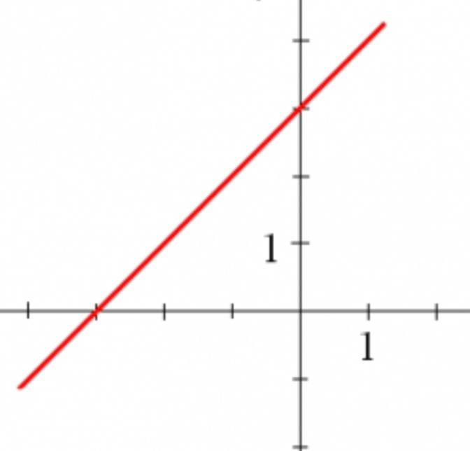
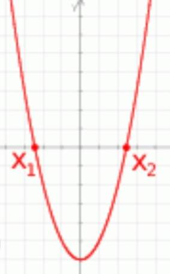
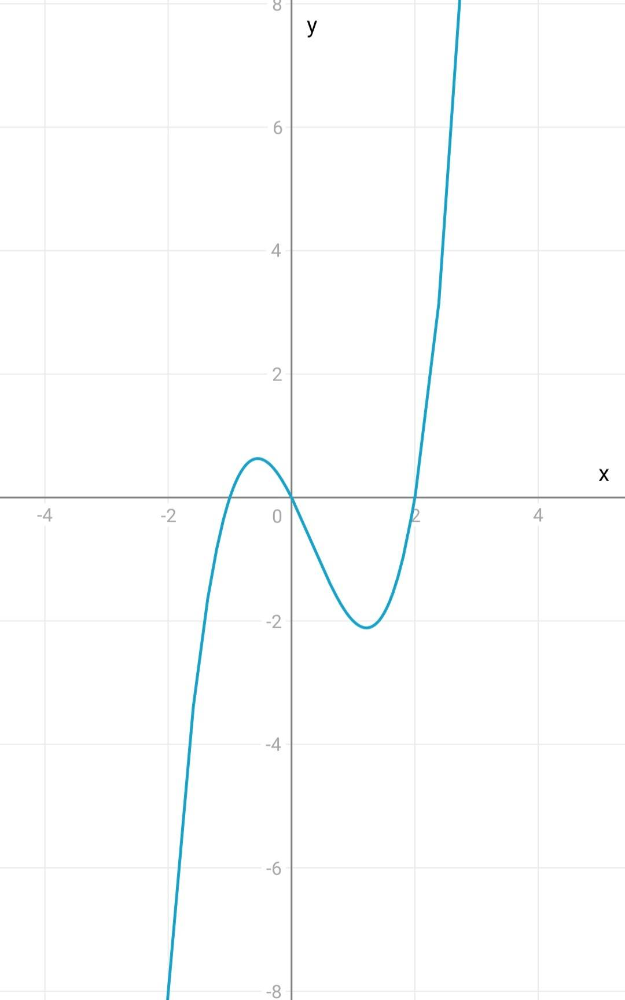
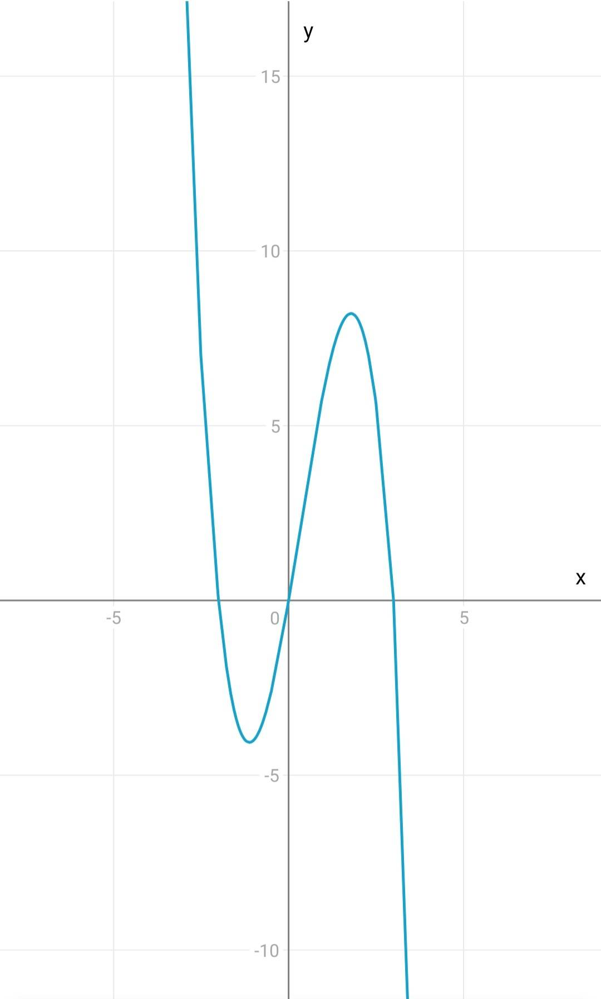
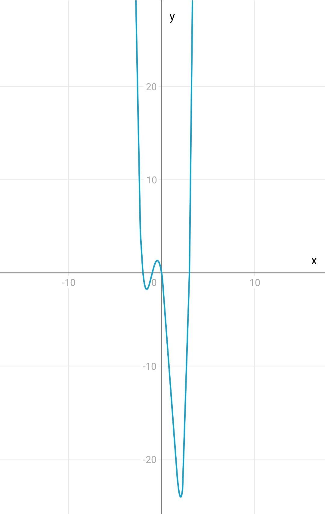
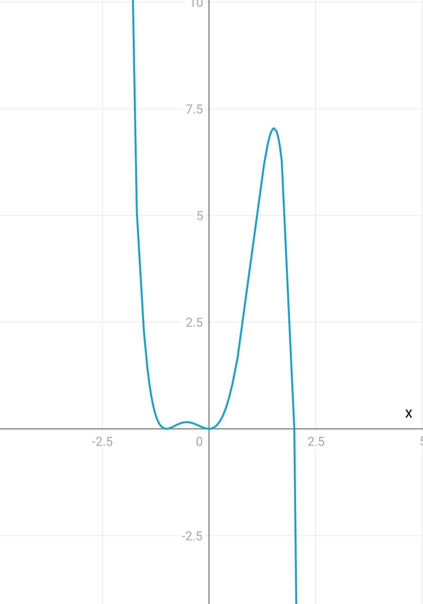
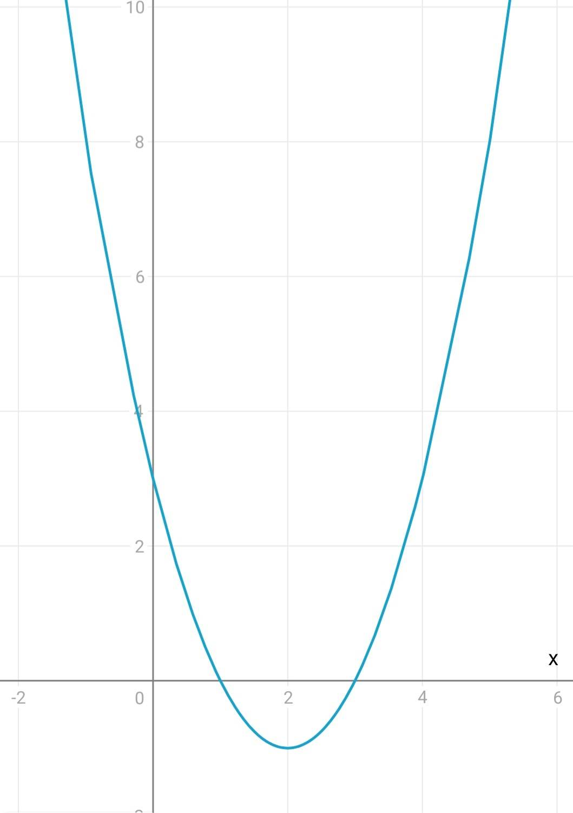
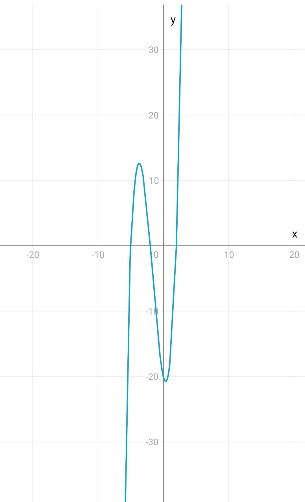

Wielomianem stopnia n jednej zmiennej x ∈ R nazywamy funkcję W określoną wzorem
\(W(x) = a_nx^n + a_{n-1}x^{n-1} + a_{n-2}x^{n-2} + ... + a_1x + a_0\),
gdzie \(n ∈ N+\) oraz \(a_n, a_{n-1}, ..., a_1, a_0 ∈ R\) i \(a_n ≠ 0\).
Liczby \(a_0, a_1, a_2, ..., a_n\) nazywamy współczynnikami wielomianu. Wielomian stopnia n ma n+1 współczynników.
\(a_nx^n, a_{n-1}x^{n-1}, ..., a_1x^1, a_0\) nazywamy wyrazami wielomianu W(x).
Stopniem wielomianu (n) nazywamy największy ze stopni jego wyrazów.
W zbiorze wielomianów wykonalne są działania: dodawania, odejmowania i mnożenia wielomianów.
Mamy dwa wielomiany:
\(W(x) = 2x^3+ 3x^2 - x + 5\)
\(P(x) = x^2 - 4x + 2\)
\(W(x) + P(x) = (2x^3 + 3x^2 - x + 5) + (x^2 - 4x + 2) = 2x^3 + (3x^2 + x^2) + (-x - 4x) + (5 + 2) = 2x^3 + 4x^2 - 5x + 7\)
\(W(x) - P(x) = (2x^3 + 3x^2 - x + 5) - (x^2 - 4x + 2) = 2x^3 + (3x^2 - x^2) + (-x + 4x) + (5 - 2) = 2x^3 + 2x^2 + 3x + 3\)
Mnożenie wielomianów jest wykonywane poprzez pomnożenie każdego wyrazu z jednym wielomianu przez każdy wyraz z drugiego wielomianu i odpowiednie zsumowanie wyników.
Twierdzenie mówi, że iloczynem wielomianów stopnia a i b jest wielomian stopnia (a+b): st. W(m×n) = st. W(m) + st. W(n).
Przykładowo, dla wielomianów:
\(W(x) = a_nx^n + a_{n-1}x^{n-1} + ... + a_1x + a_0\),
\(P(x) = b_mx^m + b_{m-1}x^{m-1} + ... + b_1x + b_0\),
Mnożenie W(x) * P(x) daje wielomian:
\(R(x) = c_{nm}x^{n+m} + c_{nm-1}x^{n+m-1} + ... + c_{11}x^{n+1} + c_{10}x^n + c_{0m}x^m + c_{0m-1}x^{m-1} + ... + c_{01}x^1 + c_{00}\)
gdzie \(c_{ij} = a_i * b_j\) dla i = 0, 1, ..., n i j = 0, 1, ..., m.
Zgodnie z twierdzeniem, stopień wielomianu R(x) będzie równy sumie stopni wielomianów W(x) i P(x): st. R(x) = st. W(x) + st. P(x).
Mamy dwa wielomiany:
\(W(x) = 2x^3+ 3x^2 - x + 5\)
\(P(x) = x^2 - 4x + 2\)
\(W(x) * P(x) = (2x^3 + 3x^2 - x + 5) * (x^2 - 4x + 2)\)
=\((2x^3 * x^2) + (2x^3 * (-4x)) + (2x^3 * 2) + (3x^2* x^2) + (3x^2 * (-4x)) + (3x^2 * 2) + (-x * x^2) + (-x * (-4x)) + (-x * 2) + (5 * x^2) + (5 * (-4x)) + (5 * 2)\)
\(= 2x^5 - 8x^4 + 4x^3 + 3x^4 - 12x^3 + 6x^2 - x^3 + 4x^2 - 2x + 5x^2 - 20x + 10\)
\(= 2x^5 - 5x^4 - 3x^3 + 15x^2 - 22x + 10\)
Zgodnie z twierdzeniem, stopień wynikowego wielomianu R(x) wynosi (3 + 2) = 5, co jest zgodne z wynikiem.
Dzielenie wielomianów jest bardziej skomlkowaną operacją i jest przedstawione niżej.
Rozkładanie wielomianu na czynniki polega na takich działaniach na nim, aby końcowo stał się iloczynem wielomianów o jak najmniejszych potęgach, których nie da się już dalej rozłożyć.
Każdy wielomian można rozłożyć na czynniki stopnia co najwyżej drugiego, a rozkład ten jest jednoznaczny.
Aby rozłożyć wielomian, można stosować metody takie jak wyłączanie wspólnego czynnika przed nawias, grupowanie wyrazów, wzory skróconego mnożenia oraz rozkład wielomianu o potędze 2 poprzez wyznaczenie jego postaci iloczynowej za pomocą "delty".
Jeżeli o wielomianie stopnia trzeciego \(W(x) = ax^3 + bx^2 + cx + d\) wiadomo, że ma 3 pierwiastki, to jego wzór można zapisać w postaci iloczynowej \(W(x) = a(x - x_1)(x - x_2)(x - x_3)\) - analogicznie do postaci iloczynowej funkcji kwadratowej. Zasada działa tak samo w przypadku wielomianów wyższych stopni.
Mamy wielomian:
\(W(x) = 2x^4 - x^3 + 2x - 1\)
\(W(x) = (x + 1)(x^2 - x + 1)(2x - 1)\)
Wielomian został rozłożony na trzy czynniki pierwsze.
Rozkład wielomianu na czynniki pierwsze:
Rozkład wielomianu W(x) wykorzystuje się do wyznaczenia pierwiastków wielomianu, a więc do rozwiązywania równań W(x) = 0.
Mamy wielomian:
\(W(x) = x^2 - 4\)
Chcemy rozwiązać równanie W(x) = 0.
Aby rozwiązać równanie, równamy wielomian W(x) do zera:
\(x^2 - 4 = 0\)
Teraz rozkładamy wielomian na czynniki:
\((x - 2)(x + 2) = 0\)
Teraz równanie sprowadza się do znalezienia wartości x, dla których iloczyn czynników wynosi zero.
Rozwiązania równania to x = 2 i x = -2.
Rozwiązywanie równań wielomianowych:
Każdy wielomian W(x) można zapisać w postaci W(x) = P(x) * Q(x) + R(x), gdzie stopień reszty z dzielenia R(x) musi być niższy niż stopień dzielnika.
Jeśli wielomian W(x) można rozłożyć do postaci W(x) = P(x) * Q(x), to mówimy, że wielomian W(x) jest podzielny przez wielomiany P(x) i Q(x) (przy założeniu, że P(x) i Q(x) nie są zerami).
Mamy wielomian:
\(W(x) = x^3 - 2x^2 - x + 2\)
Chcemy podzielić ten wielomian przez:
\(D(x) = x - 1\)
Aby podzielić wielomian W(x) przez D(x), wykonujemy dzielenie wielomianów:
\begin{aligned}\dfrac{x^{2}+x}{\left( x^{3}-2x^{2}-x+2\right) :\left( x-1\right) }\\ -x^{3}+x^{2}\\ \overline{=x^{2}}-x+2\\ -\dfrac{x^{2}+x}{\dfrac{-}{}=2}\end{aligned}
Podzieliliśmy wielomian W(x) przez D(x) i otrzymaliśmy wynik:
\(W(x) = (x^2 + x + 1)(x - 1) + (-4x + 2)\)
Reszta z dzielenia to \((-4x + 2)\).
Mamy wielomian:
\(W(x) = x^2 + x + 1\)
Chcemy podzielić ten wielomian przez:
\(P(x) = x^2 + x + 1\)
Aby podzielić wielomian W(x) przez P(x), wykonujemy dzielenie wielomianów:
1
___________
x2 + x + 1 | x2 + x + 1
- (x2 + x + 1)
___________
0
Podzieliliśmy wielomian W(x) przez P(x) i otrzymaliśmy wynik:
\(W(x) = (x^2 + x + 1)(x^2 + x + 1) + 0\)
Reszta z dzielenia wynosi 0, co oznacza, że wielomian W(x) jest podzielny przez P(x).
Twierdzenie Bézouta mówi, że jeśli wielomian W(x) jest podzielny przez dwumian (x - a), gdzie a ≠ 0, to a jest równocześnie pierwiastkiem wielomianu W(x). Zatem W(a) = 0.
Twierdzenie Bézouta pozwala nam znaleźć pierwiastki wielomianu poprzez sprawdzenie, czy dany dwumian jest jego dzielnikiem.
Mamy wielomian \(W(x) = 2x^3 - 5x^2 + 3x - 2\). Sprawdźmy, czy (x - 1) jest dzielnikiem tego wielomianu.
Aby sprawdzić, czy (x - 1) jest dzielnikiem W(x), obliczmy W(1):
\(W(1) = 2(1)^3 - 5(1)^2 + 3(1) - 2 = 0.\)
Ponieważ W(1) = 0, (x - 1) jest dzielnikiem wielomianu W(x) i 1 jest jego pierwiastkiem.
Wielomian jednej zmiennej stopnia n ma co najwyżej n pierwiastków rzeczywistych.
Wielomian jednej zmiennej nieparzystego stopnia ma co najmniej jeden pierwiastek.
Wykresem wielomianu stopnia pierwszego \(w(x) = ax + b\) jest prosta.
Wykresem wielomianu stopnia drugiego \(w(x) = ax^2 + bx + c jest\) parabola.
Aby narysować dokładny wykres wielomianu wyższego stopnia często trzeba skorzystać z komputera, bądź też kalkulatora graficznego, gdyż jest to bardzo pracochłonne. Można natomiast naszkicować przybliżony kształt wykresu, dzięki znajomości pierwiastków wielomianu
Przykład 1: \(y = x(x + 1)(x - 2)\)
Wykres wielomianu \(y = x(x + 1)(x - 2)\)
Przykład 2: \(y = x(x + 1)(x - 3)(x + 2)\)
Wykres wielomianu \(y = x(x + 1)(x - 3)(x + 2)\)
Przykład 3: \(y = -x(x + 2)(x - 3)\)
Wykres wielomianu \(y = -x(x + 2)(x - 3)\)
Przykład 4: \(y = -x^2(x + 1)^2(x - 2)\)
Wykres wielomianu \(y = -x^2(x + 1)^2(x - 2)\)
Warto zauważyć, że gdy pierwiastek jest nieparzystej krotności, to wielomian zmienia w nim znak (z ujemnego na dodatni, bądź też odwrotnie). Natomiast w przypadku pierwiastków parzystej krotności wielomian nie zmienia znaku.
Znak wielomianu w przedziale (a, ∞), gdzie a jest największym pierwiastkiem wielomianu, jest taki sam jak znak przy współczynniku o najwyższej potędze.
Suma współczynników wielomianu jest równa W(1). Jeśli suma współczynników wielomianu wynosi 0, to W(1) = 0, czyli liczba 1 jest pierwiastkiem wielomianu.
Aby rozwiązać nierówność wielomianową, należy rozłożyć wielomian, aby poznać jego miejsca zerowe. Dzięki temu możemy narysować przybliżony wykres wielomianu i określić dla jakich argumentów zostaje spełniona nierówność.
Przykład 1: Rozwiązanie nierówności wielomianowej
Rozważmy nierówność: W(x) < 0, gdzie \(W(x) = x^2 - 4x + 3\).
Aby rozwiązać tę nierówność, zaczynamy od rozłożenia wielomianu na czynniki: \(W(x) = (x - 1)(x - 3)\).
Następnie rysujemy wykres wielomianu:
Wykres wielomianu \(W(x) = x^2 - 4x + 3\)
Na podstawie wykresu widzimy, że wielomian jest mniejszy od zera w przedziale (1, 3).
Więc rozwiązaniem nierówności jest: 1 < x < 3.
Przykład 2: Rozwiązanie innej nierówności wielomianowej
Rozważmy nierówność: W(x) > 0, gdzie \(W(x) = x^3 + 5x^2 - 4x - 20\).
Zacznijmy od rozłożenia wielomianu na czynniki: \(W(x) = (x + 5)(x + 2)(x - 2)\).
Narysujmy wykres wielomianu:
Wykres wielomianu \(W(x) = x^3 + 5x^2 - 4x - 20\)
Na podstawie wykresu widzimy, że wielomian jest większy od zera w przedziałach (-5, -2) i (2, ∞).
Rozwiązanie nierówności wielomianowych polega na rozłożeniu wielomianu na czynniki, narysowaniu wykresu wielomianu i określeniu przedziałów, dla których nierówność jest spełniona.